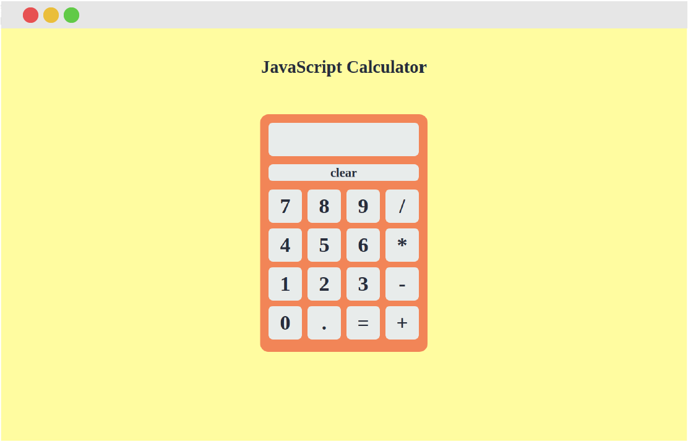

<section class="portfolio-template dark-text">
    <div class="skills-content">

      <div class="col-3 fixed">
        <div class="vertical-align">
          
          <div class="temp-container">
            <h1 class="temp-title text-center gold-text">JS Calculator</h1>
            <div class="icon-container">
              <a href="https://github.com/benszucs/js-calculator" target="_blank" class="social-icon">
                <i class="fab fa-github-square"></i>
              </a>
              <a href="../projects/calculator/calculator.html" target="_blank" class="social-icon">
                <i class="fas fa-desktop"></i>
              </a>
            </div>
          </div>
        </div>
      </div>

      <div class="col-3 fixed">
        <div class="vertical-align">
          <p class="list-title text text-center gold-text">Technologies used</p>
          <ul class="text text-center projects-text">
            <li>HTML</li>
            <li>CSS</li>
            <li>JavaScript</li>
          </ul>
        </div>
      </div>

      <div class="col-3 fixed">
        <div class="vertical-align">
          <h1 class="list-title text text-center gold-text">Description</h1>
          <p class="text text-center projects-text">First JavaScript project that I have built without following any tutorials. Got a brief from the Odin Project and attempted to make this calculator using the limited knowledge I had at the time.</p>
        </div>
      </div>

    </div>
</section>
